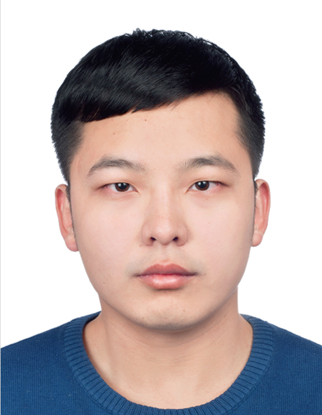

Postdoctoral Fellow
Department of Computer Science and Engineering
The Chinese University of Hong Kong
Email: zhuangzhen1995@gmail.com
I am currently a Postdoctoral Fellow at the Chinese University of Hong Kong (CUHK) under the supervision of Prof. Tsung-Yi Ho. I obtained my Ph.D. from the Chinese University of Hong Kong (CUHK) in 2025 under the supervision of Prof. Tsung-Yi Ho. Previously, I received my M.E. and B.E. from Fuzhou University in 2021 and 2018, respectively. I am grateful for the chance to visit Georgia Tech under the supervision of Prof. Sung Kyu Lim and NTHU under the supervision of Prof. Ting-Chi Wang. My current research interest is mainly in Electronic Design Automation (EDA), especially EDA for 3D IC and advanced packaging.
Electronic Design Automation (EDA)
EDA for 3D IC
EDA for Advanced Packaging
Physical Design Automation
AI/GPU Acceleration for EDA
Computer Architecture
Chiplet Architecture Exploration
[C19] Chenghan Wang, Zhen Zhuang, Kai Zhu, Darong Huang, Luis Costero, Rongmei Chen, David Atienza, and Tsung-Yi Ho, “ETLA-3D: Equivalent Thin Layer Aggregation based Thermal FEM for Hybrid Bonding F2F 3D ICs,” accepted by IEEE/ACM Design, Automation and Test in Europe (DATE), 2026.
[C18] Zixiao Wang, Tianshu Hou, Chenghan Wang, Zhen Zhuang, Tsung-Yi Ho, Farzan Farnia, and Bei Yu, “FastRW: An Efficient Random Walk Method for Steady-State Thermal Analysis,” accepted by IEEE/ACM Design, Automation and Test in Europe (DATE), 2026.
[C17] Zhen Zhuang, Zheng Yang, Yuxuan Zhao, Jiawei Hu, Bei Yu, Sung Kyu Lim, and Tsung-Yi Ho, “DPO-3D: Differentiable Power Delivery Network Optimization via Flexible Modeling for Routability and IR-Drop Tradeoff in Face-to-Face 3D ICs,” accepted by IEEE/ACM Asian and South Pacific Design Automation Conference (ASPDAC), 2026.
[C16] Zheng Yang, Zhen Zhuang, Tsung-Yi Ho, and Sung Kyu Lim, “Graph Attention-Based Current Crowding Analysis at TSV Interfaces in 3D Power Delivery Networks,” accepted by IEEE/ACM Asian and South Pacific Design Automation Conference (ASPDAC), 2026.
[C15] Shuo Ren, Zhen Zhuang, Rongliang Fu, Leilei Jin, Libo Shen, Bei Yu, and Tsung-Yi Ho, “Partitioning-Free 3D-IC Floorplanning,” accepted by IEEE/ACM Asian and South Pacific Design Automation Conference (ASPDAC), 2026.
[C14] Shanyi Li, Zhen Zhuang, Siyuan Liang, Bei Yu, and Tsung-Yi Ho, “MMPack: Multi-Mask Co-Design for Ultra-Large Wafer-Scale Package Integration,” in Proceedings of IEEE/ACM International Conference on Computer-Aided Design (ICCAD), pp. 1-9, 2025.
[C13] Leilei Jin, Rongliang Fu, Zhen Zhuang, Liang Xiao, Fangzhou Liu, Bei Yu, and Tsung-Yi Ho, “ChronoTE: Crosstalk-Aware Timing Estimation for Routing Optimization via Edge-Enhanced GNNs,” in Proceedings of IEEE/ACM International Conference on Computer-Aided Design (ICCAD), pp. 1-9, 2025.
[C12] Jiawei Hu, Pruek Vanna-iampikul, Zhen Zhuang, Tsung-Yi Ho, and Sung Kyu Lim, “GNN-MLS: Signal Routing in Mixed-Node 3D ICs through GNN-Assisted Metal Layer Sharing,” in Proceedings of ACM/IEEE Design Automation Conference (DAC), pp. 1-7, 2025.
[C11] Zheng Yang, Zhen Zhuang, Bei Yu, Tsung-Yi Ho, Martin D.F. Wong, and Sung Kyu Lim, “ML-Based Fine-Grained Modeling of DC Current Crowding in Power Delivery TSVs for Face-to-Face 3D ICs,” in Proceedings of ACM International Symposium on Physical Design (ISPD), pp. 233-241, 2025.
[C10] Zhen Zhuang, Quan Chen, Hao Yu, and Tsung-Yi Ho, “Fast Routing Algorithm for Mask Stitching Region of Ultra Large Wafer Scale Integration,” in Proceedings of IEEE/ACM Asian and South Pacific Design Automation Conference (ASPDAC), pp. 279-284, 2025. (Invited Paper)
[C9] Zhen Zhuang, Kai-Yuan Chao, Bei Yu, Tsung-Yi Ho, and Martin D.F. Wong, “Multi-Product Optimization for 3D Heterogeneous Integration with D2W Bonding,” in Proceedings of IEEE/ACM International Conference on Computer-Aided Design (ICCAD), pp. 1-9, 2023.
[C8] Zhen Zhuang, Bei Yu, Kai-Yuan Chao, and Tsung-Yi Ho, “Multi-Package Co-Design for Chiplet Integration,” in Proceedings of IEEE/ACM International Conference on Computer-Aided Design (ICCAD), no. 114, pp. 1-9, 2022.
[C7] Zhen Zhuang, Genggeng Liu, Tsung-Yi Ho, Bei Yu, and Wenzhong Guo, “TRADER: A Practical Track-Assignment-Based Detailed Router,” in Proceedings of IEEE/ACM Design, Automation and Test in Europe (DATE), pp. 766-771, 2022.
[C6] Yidan Jing, Liliang Yang, Zhen Zhuang, Genggeng Liu, Xing Huang, Wen-Hao Liu, and Ting-Chi Wang, “SPTA: A Scalable Parallel ILP-Based Track Assignment Algorithm with Two-Stage Partition,” in Proceedings of IFIP/IEEE International Conference on Very Large Scale Integration (VLSI-SoC), pp. 1-6, 2022.
[C5] Zhen Zhuang, Xing Huang, Genggeng Liu, Wenzhong Guo, Weikang Qian, and Wen-Hao Liu, “ALIFRouter: A Practical Architecture-Level Inter-FPGA Router for Logic Verification,” in Proceedings of IEEE/ACM Design, Automation and Test in Europe (DATE), pp. 1570-1573, 2021.
[C4] Xinghai Zhang, Zhen Zhuang, Genggeng Liu, Xing Huang, Wen-Hao Liu, Wenzhong Guo, and Ting-Chi Wang, “MiniDelay: Multi-Strategy Timing-Aware Layer Assignment for Advanced Technology Nodes,” in Proceedings of IEEE/ACM Design, Automation and Test in Europe (DATE), pp. 586-591, 2020.
[C3] Zhen Zhuang, Genggeng Liu, Xing Huang, Xiaotao Jia, Wen-Hao Liu, and Wenzhong Guo, “MSFRoute: Multi-Stage FPGA Routing for Timing Division Multiplexing Technique,” in Proceedings of ACM Great Lakes Symposium on VLSI (GLSVLSI), pp. 107-112, 2020.
[C2] Genggeng Liu, Zhen Zhuang, Wenzhong Guo, and Ting-Chi Wang, “RDTA: An Efficient Routability-Driven Track Assignment Algorithm,” in Proceedings of ACM Great Lakes Symposium on VLSI (GLSVLSI), pp. 315-318, 2019.
[C1] Hailin Wu, Saijuan Xu, Zhen Zhuang, and Genggeng Liu, “X-Architecture Steiner Minimal Tree Construction Based on Discrete Differential Evolution,” in Proceedings of International Conference on Natural Computation, Fuzzy Systems and Knowledge Discovery (ICNC-FSKD), pp. 433-442, 2019.
[J8] Zepeng Li, Zhen Zhuang, Genggeng Liu, Wen-Hao Liu, Tsung-Yi Ho, and Ting-Chi Wang, “Parallel Delay-Driven Layer Assignment Leveraging Hierarchical Task Graph Modeling for Advanced Technology Nodes,” accepted by IEEE Transactions on Computers (TC).
[J7] Zhen Zhuang, Weishiun Hung, MD Arafat Kabir, Yarui Peng, and Tsung-Yi Ho, “Adaptive Redistribution Layer Routing for Chiplet-Package Co-Design in 2.5D System,” accepted by ACM Transactions on Design Automation of Electronic Systems (TODAES).
[J6] Shanyi Li, Zhen Zhuang, Mingyu Liu, Weihua Sheng, Bei Yu, and Tsung-Yi Ho, “HiePlace: Efficient Hierarchical PCB Placement,” IEEE Transactions on Computer-Aided Design of Integrated Circuits and Systems (TCAD), vol. 45, no. 1, pp. 428-440, 2026.
[J5] Siyuan Liang, Zhen Zhuang, Kai-Yuan Chao, Bei Yu, and Tsung-Yi Ho, “Multi-Layer Package Power/Ground Planes Synthesis with Balanced DC IR Drops: A Game-Theoretic Optimization Approach,” IEEE Transactions on Computer-Aided Design of Integrated Circuits and Systems (TCAD), vol. 45, no. 1, pp. 453-465, 2026.
[J4] Haoyang Xu, Xing Huang, Zhen Zhuang, Zhiwen Yu, Bin Guo, Kai-Yuan Chao, Bei Yu, Tsung-Yi Ho, and Martin D. F. Wong, “Hierarchical Partitioning-Based Inter-Chip Redistribution Layer Routing for Fan-Out Wafer-Level Packaging,” IEEE Transactions on Computer-Aided Design of Integrated Circuits and Systems (TCAD), vol. 44, no. 11, pp. 4367-4380, 2025.
[J3] Shixin Chen, Shanyi Li, Zhen Zhuang, Su Zheng, Zheng Liang, Tsung-Yi Ho, Bei Yu, and Alberto L. Sangiovanni-Vincentelli, “Floorplet: Performance-aware Floorplan Framework for Chiplet Integration,” IEEE Transactions on Computer-Aided Design of Integrated Circuits and Systems (TCAD), vol. 43, no. 6, pp. 1638–1649, 2024.
[J2] Genggeng Liu, Yuhan Zhu, Zhen Zhuang, Zhenyu Pei, Min Gan, Xing Huang, and Wenzhong Guo, “A Robust Multilayer X-Architecture Global Routing System Based on Particle Swarm Optimization,” IEEE Transactions on Systems, Man, and Cybernetics: Systems (TSMC), vol. 54, no. 9, pp. 5627-5640, 2024.
[J1] Genggeng Liu, Zhisheng Chen, Zhen Zhuang, Wenzhong Guo, and Guolong Chen, “A Unified Algorithm Based on HTS and Self-adapting PSO for the Construction of Octagonal and Rectilinear SMT,” Soft Computing, vol. 24, no. 6, pp. 3943-3961, 2020.
Ph.D., Department of Computer Science and Engineering, The Chinese University of Hong Kong (CUHK), Aug. 2021 - Jul. 2025
M.E., College of Mathematics and Computer Science, Fuzhou University (FZU), Sep. 2018 - Mar. 2021
B.E., College of Mathematics and Computer Science, Fuzhou University (FZU), Sep. 2014 - Jul. 2018
Postdoctoral Fellow, Department of Computer Science and Engineering
Supervisor: Prof. Tsung-Yi Ho
Aug. 2025 - Present
Visiting Student, School of Electrical and Computer Engineering
Topic: Circuit Design Automation for Heterogeneous Integration
Supervisor: Prof. Sung Kyu Lim
Mar. 2024 - Aug. 2024
Visiting Student, Department of Computer Science
Topic: Physical Design Automation
Supervisor: Prof. Ting-Chi Wang
Jul. 2019 - Aug. 2019
Visiting Student, Department of Computer Science
Topic: Physical Design Automation
Supervisor: Prof. Ting-Chi Wang
Apr. 2018 - Jun. 2018
IEEE Transactions on Computer-Aided Design of Integrated Circuits and Systems (TCAD)
IEEE Transactions on Systems, Man, and Cybernetics: Systems (TSMC)
ACM Transactions on Design Automation of Electronic Systems (TODAES)
Expert Systems with Applications
Integration, the VLSI Journal
IEEE/ACM Asian and South Pacific Design Automation Conference (ASPDAC), 2026.
ACM International Symposium on Physical Design (ISPD), 2024, 2025.
Fall 2023: ENGG2440A Discrete Mathematics for Engineers
Spring 2023: CENG5270 EDA for Physical Design of Digital Systems
Fall 2022: ENGG2440A Discrete Mathematics for Engineers
Spring 2022: CSCI3180 Principles of Programming Languages
Fall 2021: ENGG2440A Discrete Mathematics for Engineers
Best Paper Award Nomination, ASPDAC, 2026
Third Place Award at ISPD Contest, ISPD, 2019
Honorable Mention Award at CAD Contest, ICCAD, 2019
Third Place Award at ISPD Contest, ISPD, 2018